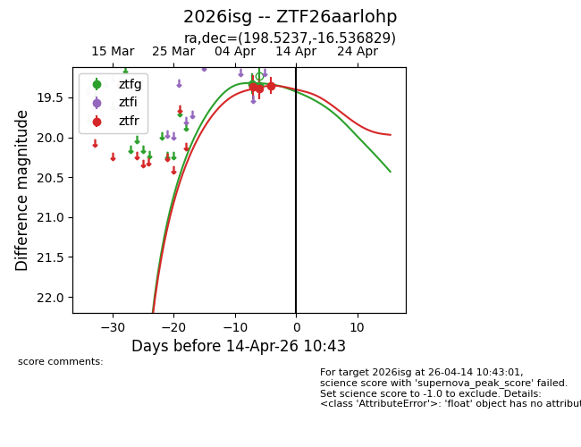
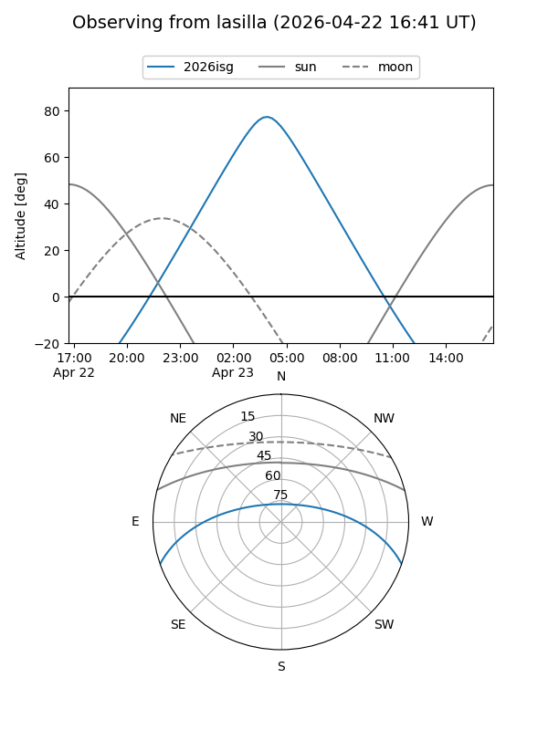
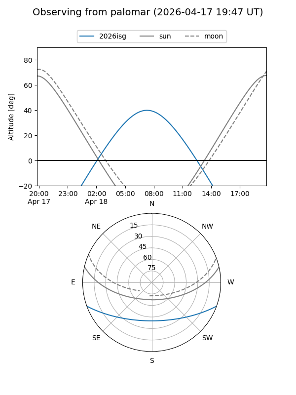
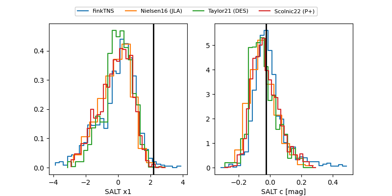

2026isg
Target 2026isg at 2026-04-14 10:53
Aliases and brokers:
FINK: link
Lasair: link
ALeRCE: link
TNS: link
YSE: link
alt names
ZTF26aarlohp (ztf,fink_ztf)
2026isg (tns,yse)
Coordinates:
equatorial (ra, dec) = 198.5237,-16.53683
equatorial (HMS+DMS) = 13:14:05.69,-16:32:12.59
galactic (l, b) = (310.7588,+45.99031)
Flags:
Photometry:
last ztfg=19.35, ztfr=19.35
2 ztfg, 3 ztfr detections
Lightcurve

Visibility


Additional plots
